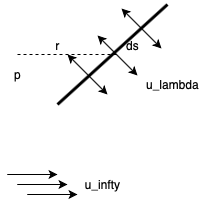
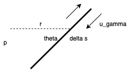

Panel methods are a classical approach to solving flow problems that is still very useful today when finding solutions to even very complicated geometries. You represent a body as a series of panels.
A few definitions first: we say a source panel of strength λ (units m/s) is defined by:
ϕp=2π1∫λln(r)ds
=2π1∫λln((xp−x)2+(yp−y)2)ds
λ=2uλ

Approximate a body as a polygon of N sides. Each panel has a uniform source λi. Define angle of flow relative to the panel normal βi. To define boundary conditions we say the boundary must be a streamline, which means that the normal velocity at each panel is zero uni=0. So we need to balance the free stream flow and the sources from all other panels.
So, at each panel i the normal velocity comes from the contribution from the panel, the contribution from all other panels, and this must equal the free flow normal −u∞cosβi
This gives N equations and N unknowns (λi). We can solve them to compute
uti=2λitanβi
ϕ(x,y)=i∑ϕi(x,y)→v=−∇ϕ
This method is applicable for non-lifting bodies. Without circulation (vertices) there can't be any lift. We can modify the model by including a term that corresponds with circulation, we can allow for lift.
Define a distributed vortex panel of strength γ (units m/s):
γ=Δs→0limΔs1∮v⋅dl=2uγ
dv=2πrγds
ϕp=2π1∫γdsθ=2π1tan−1(yp−xyp−y)γds

Apply the boundary condition to the vortex panels un,i=0
This gives N unknowns γi and only N-1 equations. The last equation comes from the Kutta condition, which says that the tangential velocity at the trailing edge has to be the same from the top as from the bottom of the airfoil. That is to say, the flow must detach at the trailing edge:
ut1=−utN
Once we've solved for γi and λi we can compute what the flow velocity is